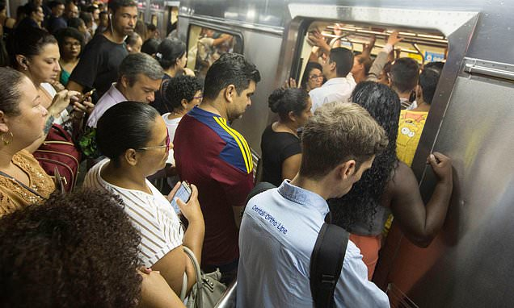

Travel
The world's worst underground train lines: From 'filth' in the UK to crime hotspots in New York and overcrowding in Tokyo

From the most-complained about lines on London's Tube, to the 'packed-to-the-brim' Paris Metro, here are some of the worst underground train networks across the globe.
Article preview
This archive includes the homepage headline, image, and preview text. It does not contain the full original article.
Back to headlinesThis archive includes the homepage headline, image, and preview text. It does not contain the full original article.